|
พุทธประวัติ
หรือ ประวัติของพระพุทธเจ้า ตอนที่ ๒/๔
|
|
อุปมา ๓ ข้อเกิดขึ้นแก่พระองค์ เมื่อพระองค์ทรงทดลองถึง ๓ วาระแล้ว ต่อมา อุปมา ๓ ข้อก็ปรากฏแก่พระองค์ว่า
๑.สมณหรือพราหมณ์ผู้มีกายและจิตยังไม่อออกจากกาม
ตรัสรู้ไม่ได้ เหมือนไม้สดแช่น้ำ สีไม่ตืดไฟ ดังนั้นพระองค์จึงพยายามป้องกันจิตไม่ให้น้อมไปในกามารมณ์ ครั้นเห็นว่าไม่ใช่หนทางตรัสรู้จึงได้ละทุกกรกิริยานั้นเสีย กลับมาเสวยอาหารอีก เพื่อจะบำเพ็ญเพียบรทางใจต่อไป และในขณะที่พระองค์ทรงบำเพ็ญทุกกรกิริยาอยู่นั้น ได้มีฤาษี ๕ ตนเรียกว่า ปัญจวัคคีย์ มาเฝ้าคอยรับใข้อยู่ ด้วยหวังว่า พระองค์ตรัสรู้ธรรมแล้วจะสอนตนให้รู้ธรรมด้วย แต่เมื่อเห็นพระองค์ละทุกกรกิริยาจึงคิดว่า ทรงคลายความเพียร ไม่มีทางที่ตรัสรู้ได้ จึงพากันละทิ้งพระองค์เสีย แล้วหนีไปอยู่ที่ป่าอิสิปตนมฤคทายวัน แขวงเมืองพาราณสี แคว้นกาสี (ปัจจุบันคือ ต.สารถนาถ อ.พาราณสี ประเทศอินเดีย) 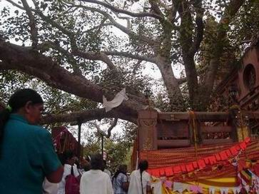 ภาพต้นโพธิ์ต้นปัจจุบัน
สถานที่พระพุทธเจ้าประทับนั่งตรัสรู้ ด้านขวาเป็นเจดีย์พุทธคยา...ซึ่งสร้างโดยพระเจ้าหุวิชกะ
ทรงรับข้าวมธุปายาสและหญ้าคา นับจากวันที่บรรพชามาประมาณ ๖ ปี จนถึงวันเพ็ฯ เดือน ๖ ตอนเช้า พระองค์ได้รับข้าวมธุปายาส (พร้อมถาดทอง)จากนางสุชาดา ธิดาของกุฎุมพีผู้เป็นนายบ้าน แล้วทรงถือเอาไปยังริมฝั่งแม่น้ำเนรัญชรา ทรงเสวยข้าวมธุปายาสหมดแล้ว ทรงอธิษฐานลอยถาดเสียในกระแสน้ำ เวลาเย็นพระองค์เสด็จมาสู่ต้นโพธิ์ ทรงรับหญ้าคา ๘ กำมือจาก โสตถิยพราหมณ์ซึ่งถวายในระหว่างทาง ทรงปูลาดหญ้านั้นที่โคนต้นโพธิ์ แล้วประทับนั่งหันหน้าไปทางทิศตะวันออก หันหลังเข้าหาต้นโพธิ์ ทรงอธิษฐานว่า ถ้ายังไม่ได้บรรลุพระสัมมาสัมโพธิญาณตราบใด ก็จะไม่เสด็จลุกขึ้นตราบนั้น ถึงแม้เนื้อและเลือดจะเหือดแห้งไปเหลือแต่หนัง เอ็น และกระดูกก็ตามที 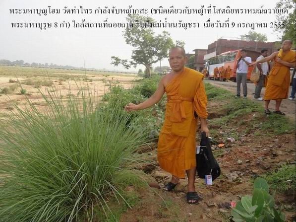 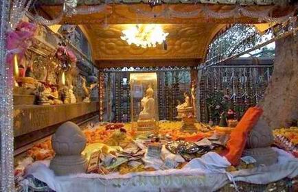 ทรงชนะมารและเสนามาร
พระองค์ทรงชนะมารและเสนามารก่อนที่ตะวันจะตกดินด้วยพระบารมี
๑๐ ทัศ คือ ทาน ศีล เนกขัมมะ ปัญญา วิริยะ ขันติ สัจจะ อธิษฐาน เมตตา
อุเบกขา และเมื่อทรงชนะมารแล้วทรงบรรลุญาณ ๓ ในยามทั้ง ๓ แห่งราตรีตามลำดับ
ดังนี้ ก็ได้ตรัสรู้เป็นพระสัมมาสัมพุทธเจ้า เมื่อวันพุธ ขึ้น ๑๕ ค่ำ เดือน ๖ ก่อนแต่พุทธศักราช ๔๕ ปี ที่โคนต้นโพธิ์อัสสัตถพฤกษ์ ใกล้ฝั่งแม่น้ำเนรัญชรา (ปัจจุบันคือ ต.พุทธคยา อ.คยา รัฐพิหาร ประเทศอินเดีย) 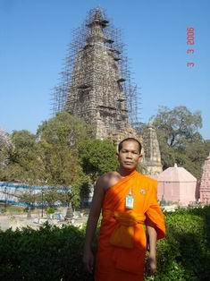 ธรรมะที่พระพุทธองค์ทรงตรัสรู้ ที่กล่าวกันว่าพระองค์ทรงตรัสรู้นั้น คือ ตรัสรู้อริยสัจ (ความจริงเป็นของประเสริฐ) ๔ ประการ ได้แก่
๑.ทุกข์ คือ ความไม่สบายกาย
ไม่สบายใจ อริยสัจ ๔ ประการนี้พระองค์ได้ตรัสรู้ในยามที่ ๓ หรือปัจฉิมยาม แห่งราตรีวันตรัสรู้นั่นเอง ได้พระนามพิเศษ ชื่อเดิมของพระองค์ว่า สิทธัตถะ นั้น หลังจากที่พระองค์ได้ตรัสรู้แล้วจึงได้พระนามพิเศษ ๒ ประการ คือ
๑.อรหัง เพราะได้พระปัญญาตรัสรู้ธรรมพิเศษอันเป็นเหตุให้ถึงความบริสุทธิ์จากกิเลสอาสวะ
ป ฐ ม โ พ
ธิ ก า ล สัตตมหาสถาน หลังจากตรัสรู้แล้ว พระองค์ได้ประทับเสวยวิมุตติสุข ๗ สัปดาห์ ๆ ละ ๑ แห่ง คือ
๑.ต้นโพธิ์ (อัสสัตถพฤกษ์)
เป็นสถานที่ตรัสรู้นั่นเอง ทรงพิจารณาปฏิจจสมุปบาทธรรม, ทรงเปล่งอุทาน
๓ ข้อในยามทั้ง ๓ แห่งราตรี (อุทาน คือ คำที่ตรัสออกมาด้วยด้วยความเบิกบานพระหฤทัย) หมายเหตุ.-อันดับที่ ๒,๓,๔ เป็นที่ซึ่งพระอรรถกถาจารย์กล่าวแทรกเพิ่มเข้ามา
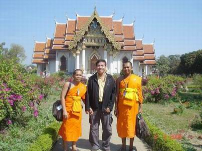 ทรงทราบอุปนิสัยของเวไนยสัตว์ เมื่อประทับอยู่ใต้ต้นเกตุจนครบ ๗ วันแล้ว จึงได้เสด็จกลับไปประทับอยู่ที่ร่มไม้ไทรชื่อ อชปาลนิโครธ อีก ทรงพิจารณาถึงธรรมที่พระองค์ได้ตรัสรู้แล้วว่า เป็นธรรมที่ลึกซึ้งซึ่งยากที่สัตว์ผู้ติดอยู่ในกามจะรู้ตามได้ จึงทรงท้อพระทัยในการที่จะสั่งสอนสัตว์ ครั้นแล้วพระองค์ทรงอาศัยพระกรุณาในหมู่สัตว์ พระองค์ทรงพิจารณาก็ทรงทราบด้วยพระปัญญาว่า หมู่สัตว์เปรียบได้กับดอกบัว ๔ เหล่า คือ
๑.สัตว์มีกิเลสน้อย เบาบาง
มีอินทรีย์แก่กล้า อาจรู้ธรรมได้ฉับพลัน เหมือนดอกบัวพ้นน้ำที่จักบานในวันนี้ เมื่อทรงพิจารณาเห็นอย่างนี้แล้ว เพราะทรงอาศัยพระมหากรุณาในหมู่สัตว์ จึงทรงตั้งปณิธาน และทรงตั้งพระทัยในอันที่จะดำรงพระชนม์อยู่เพื่อแสดงธรรมโปรดเวไนยสัตว์ จนกว่าพระธรรมคำสั่งสอนของพระองค์จะตั้งมั่น พุทธบริษัทรู้ทั่วถึงธรรมแล้วจึงจักปรินิพพาน หรือที่เรียกกันว่า ทรงทำอายุสังขาราธิษฐาน นั่นเอง พระพุทธองค์ทรงกระทำอายุสังขาราธิษฐานที่ ต้นอชปาลนิโครธ ในสัปดาห์ที่ ๘ นับตั้งแต่วันตรัสรู้เป็นต้นมา เพราะทรงปรารภถึงความตั้งมั่นแห่งพระศาสนาและพุทธบริษัทเป็นเหตุ, เกี่ยวกับเรื่องในตอนนี้ พระอรรถกถาจารย์กล่าวว่า ในเวลาที่พระพุทธองค์ทรงท้อพระทัยอยู่นั้น ท้าวสหัมบดีพรหมทราบพุทธอัธยาศัย จึงลงมากราบทูลอาราธนาให้พระพุทธองค์ทรงแสดงธรรมโดยอ้างว่า สัตว์ที่มีกิเลสเบาบางอาจรู้ธรรมที่ทรงแสดงนั้นก็มี พระพุทธองค์ทรงเห็นด้วยจึงทรงรับคำอาราธนาของท้าวสหัมบดีพรหม ทรงเลือกบุคคลผู้จะรับพระธรรมเทศนา ในเบื้องต้นทรงพิจารณาถึงอาฬารดาบส กาลามโคร และ อุทกดาบส รามบุตร และทรงทราบว่าท่านทั้ง ๒ นั้นสิ้นชีพเสียแล้ว ต่อมาจึงทรงระลึกถึงปัญจวัคคีย์ ซึ่งเคยรับใช้พระองค์มาก่อน จึงตกลงพระทัยว่าจะแสดงธรรมแก่ปัญจวัคคีย์ก่อนใครอื่น เสด็จโปรดปัญจวัคคีย์ ต่อจากนั้นพระองค์ก็เสด็จออกจากโคนต้นไทรชื่อ อชปาลนิโครธ แล้วเสด็จไปยังเมืองพาราณสี ได้พบกับอุปกาชีวกในระหว่างทางจากต้นโพธิ์กับแม่น้ำคยาต่อกัน ท่านอุปกาชีวกทูลถามถึงครูผู้สอน (ศาสดา)ของพระพุทธองค์ พระองค์จึงตรัสตอบว่า พระองค์เป็นสยัมภูตรัสรู้ได้โดยลำพังพระองค์เอง ไม่มีใครเป็นครูสอน อุปกาชีวกไม่เชื่อ สั่นศีรษะ แลบลิ้นแล้วหลีกไป พระองค์จึงได้เสด็จไปถึง ป่าอิสิปตนมฤคทายวัน แขวงเมืองพาราณสี แคว้นกาสี ในเวลาเย็นวันขึ้น ๑๔ ค่ำ เดือน ๘ หรือเดือน อาสาฬหะ 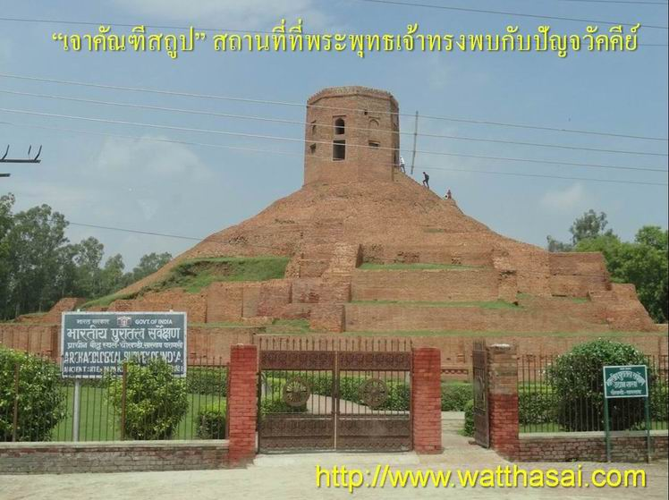 ปัญจวัคคีย์แสดงอาการไม่เคารพ ฝ่ายปัญจวัคคีย์ เมื่อเห็นพระองค์เสด็จมาแต่ไกล จึงปรึกษากันว่าพระสมณโคดม คลายความเพียร เวียนมาเพื่อความมักมากอยู่บัดนี้ ใครไม่พึงลุกขึ้นยืนรับบาตรจีวร แต่ว่าพึงปูอาสนะไว้ ถ้าเธอปรารถนานั่งก็จะนั่งครั้นพระองค์เสด็จมาถึงแล้ว พวกปัญจวัคคีย์พูดกับพระองค์ ด้วยวาจาไม่เคารพ โดยออกพระนามและใช้คำว่า อาวุโส ซึ่งพระพุทธองค์ก็ตรัสห้ามเสียโดยตรัสว่า เราได้บรรลุอมฤตธรรมแล้ว ท่านทั้งหลายจงฟังเถิด เราจักสั่งสอน ไม่ช้าเท่าไรท่านก็จักบรรลุอมฤตธรรมเป็นแน่แท้ ปัญจวัคคีย์ไม่เชื่อและกล่าวคัดค้าน พระองค์ก็ทรงเตือน แต่ปัญจวัคคีย์ก็ยังคัดค้านอยู่นั่นเองสิ้น ๒ - ๓ ครั้ง พระองค์จึงตรัสว่า แต่ไหน ๆ มา ท่านเคยได้ยินเราพูดเช่นนี้กะท่านบ้างหรือ ? พวกปัญจวัคคีย์นึกได้ว่าไม่เคยได้ยินเลย จึงได้ยอมรับฟังพระธรรมของพระพุทธองค์ ทรงแสดงปฐมเทศนา พระธรรมเศนากัณฑ์แรกที่พระพุทธองค์ทรงแสดงมีชื่อว่า ธัมมจักกัปปวัตตนสูตร เนื้อความแห่งพระสูตรนี้ พระพุทธองค์ทรงแสดงตามลำดับอย่างนี้คือ
๑.เบื้องต้น ทรงแสดงที่สุด
๒ อย่าง ที่บรรพชิตไม่ควรเสพ ได้แก่
๒.ทรงแสดงมัชฌิมาปฏิปทา
คือ ทางสายกลาง ซึ่งได้แก่ มรรคมีองค์ ๘ ที่บรรพชิตควรเสพว่า เป็นทางที่จะทำให้บรรลุธรรมวิเศษได้ 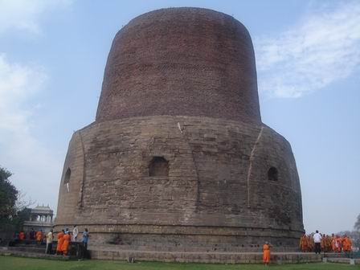 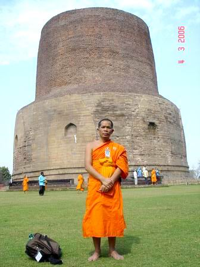 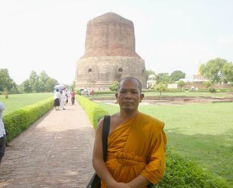 ได้ปฐมสาวก ในขณะที่พระองค์ทรงแสดงพระธรรมเทศนาอยู่นั้นปรากฏว่า ธรรมจักษุ คือ ดวงตาเห็นธรรม อยู่ในชั้นได้โสดาปัตติผล (โสดาบันน์) ได้เกิดขึ้นแก่ ท่านโกณฑัญญะ ว่า สิ่งใดสิ่งหนึ่งมีความเกิดขึ้นเป็นธรรมดา สิ่งนั้นทั้งหมดมีความดับไปเป็นธรรมดา คือทุกสิ่งทุกอย่างที่เกิดขึ้นมาแล้วย่อมแตกสลายไปไปทั้งหมด เป็นเหตุให้ท่านโกณฑัญญะบรรลุโสดาปัตติผล พระพุทธ องค์ทรงทราบจึงเปล่งอุทานว่า โกณฑัญญะได้รู้แล้วหนอ โกณฑัญญะได้รู้แล้วหนอ เพราะอาศัยพระอุทานที่ว่า อัญญา ซึ่งแปลว่า ได้รู้แล้ว ที่พระพุทธเจ้าตรัสนั้น ฉะนั้นคำว่า อัญญา จึงได้เป็นคำนำหน้าชื่อของท่านโกณฑัญญะตลอดมาว่า พระอัญญาโกณฑัญญะ พอจบพระธรรมเทศนา ท่านโกณฑัญญะจึงทูลขออุปสมบทในพระธรรมวินัย พระพุทธ เจ้าทรงประทานอุปสมบทให้ท่านด้วยพระดำรัสว่าเธอจงเป็นภิกษุมาเถิด ธรรมอันเรากล่าวดีแล้ว เธอจงประพฤติพรหมจรรย์เพื่อทำที่สุดแห่งทุกข์โดยชอบเถิด การอุปสมบทแบบนี้เรียกว่า เอหิภิกขุอุปสัมปทา เป็นอันว่าท่าน พระอัญญาโกณฑัญญะ ได้เป็นปฐมสาวกคือสาวกองค์แรกในพระพุทธศาสนา ในวันขึ้น ๑๕ ค่ำ เดือน ๘ หรือเดือนอาสาฬหะ นั่นเอง, พระสังฆรัตนะก็ได้เกิดขึ้นเป็นครั้งแรกในโลก เป็นเหตุให้ครบ ๓ รัตนะ ที่พวกเราชาวพุทธเรียกกันว่า พระรัตนตรัยนั่นเอง ต่อมาพระพุทธเจ้าก็ทรงสั่งสอนท่านทีเหลืออีก ๔ ท่านคือ วัปปะ ภัททิยะ มหานามะ และ อัสสชิ ด้วยพระธรรมเทศนาชื่อว่า ปกิณณกเทศนา จนท่านเหล่านั้นได้ดวงตาเห็นธรรมแล้วทูลขออุปสมบทในพระพุทธศาสนา ซึ่งพระพุทธเจ้าก็ทรงอนุญาตให้เป็นภิกษุในพระพุทธศาสนา ทั้งสิ้นเหมือนกับท่าน พระอัญญาโกณฑัญญะ ทรงแสดงอนัตตลักขณสูตร ครั้นท่านทั้ง ๕ ซึ่งเรียกว่า พระปัญจวัคคีย์ มีอินทรีย์แก่กล้าสมควรที่จะเจริญวิปัสสนาเพื่อบรรลุ วิมุตติ คือ ความหลุดพ้น ได้แล้ว ครั้นถึงวันแรม ๕ ค่ำ เดือน ๘ พระพุทธเจ้าก็ทรงแสดงพระธรรมเทศนาชื่อ อนัตตลักขณสูตร ซึ่งมีใจความว่า ขันธ์ ๕ คือ รูป เวทนา สัญญา สังขาร วิญญาณ เป็นของไม่เที่ยง เป็นทุกข์ เป็นอนัตตา ไม่ใช่ตัว ไม่ใช่ตน ไม่ใช่ของตน ไม่เป็นไปตามปรารถนา เป็นไปเพื่อความป่วยไข้ ไม่ควรจะยึดมั่นถือมั่น เมื่อพระปัญจวัคคีย์พิจารณาตามภูมิธรรมเทศนานั้นแล้ว จิตก็หลุดพ้นจากอาสวะ ไม่ยึดมั่นถือมั่นด้วยอุปาทาน หรือที่ท่านเรียกว่า บรรลุพระอรหัตตผลหรือพระอรหันต์ นั่นเอง ครั้งนั้นมีพระอรหันต์เกิดขึ้นในโลก ๖ องค์ รวมทั้งพระศาสดา 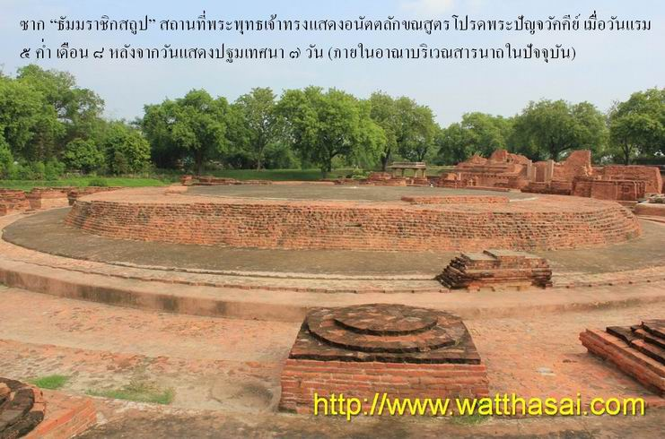
ปริจเฉทที่ ๗ ส่งสาวกไปประกาศพระศาสนา ยสกุลบุตรบรรพชา สมัยนั้นมีกุลบุตรผู้หนึ่งชื่อ ยสะ เป็นบุตรของเศรษฐีในเมืองพาราณสี มีปราสาท ๓ หลังสำหรับเป็นที่อยู่ใน ๓ ฤดู สมัยนั้นเป็นฤดูฝน ยสกุลบุตรอยู่ในปราสาทประจำฤดู บำเรอด้วยดนตรีมีสตรีประโคม ไม่มีบุรุษเจือปน คืนวันหนึ่ง ยสกุลบุตรตื่นขึ้นมาในยามดึก ได้เห็นอากัปกิริยาของหญิงบริวารในคราวนอนหลับซึ่งมีอาหารดุจซากศพในป่าช้า จึงเปล่งอุทานว่า ที่นี่วุ่นวายหนอ ที่นี่ขัดข้องหนอ จึงสวมรองเท้าเดินออกจากบ้านไปตามทางที่จะไปสู่ป่าอิสิปตนมฤคทายวัน เดินไปพลาง บ่นไปพลางว่า ที่นี่วุ่นวายหนอ ที่นี่ขัดข้องหนอ ขณะนั้นเป็นเวลาใกล้รุ่ง พระบรมศาสดาเสด็จเดินจงกรมอยู่ได้สดับเข้า จึงตรัสตอบไปว่า ที่นี่ไม่วุ่นวาย ที่นี่ไม่ขัดข้อง ท่านจงมาที่นี่เถิด นั่งลงเถิด เราจักแสดงธรรมแก่ท่าน พอยสกุลบุตรได้ยินเช่นนั้นแล้วก็คิดว่า ที่นี่ไม่วุ่นวาย ที่นี่ไม่ขัดข้อง" จึงถอดรองเท้า แล้วเข้าไปเฝ้า ไหว้แล้วนั่งลงในที่สมควรแห่งหนึ่ง พระพุทธเจ้าทรงแสดง อนุปุพพิกถา คือ ถ้อยคำที่แสดงหรือกล่าวไปตามลำดับ, มี ๕ ประการ คือ
๑.ทานกถา กล่าวถึงทาน
การให้ และทรงแสดง อริยสัจ ๔ ประการ คือ
๑.ทุกข์ คือ ความไม่สบายกาย
ไม่สบายใจ พอจบพระธรรมเทศนา ยสกุลบุตรก็ได้ดวงตาเห็นธรรม (ธรรมจักษุ) ภายหลังท่านพิจารณาภูมิธรรมที่พระพุทธเจ้าทรงแสดงแก่เศรษฐีผู้เป็นบิดาของท่านเองอีกวาระหนึ่ง จิตของท่านยสกุลบุตรก็หลุดพ้นจากอาสวะ ไม่ยึดมั่นถือมั่นด้วยอุปาทาน (หมายถึง บรรลุพระอรหัตตผล หรือเป็นพระอรหันต์) 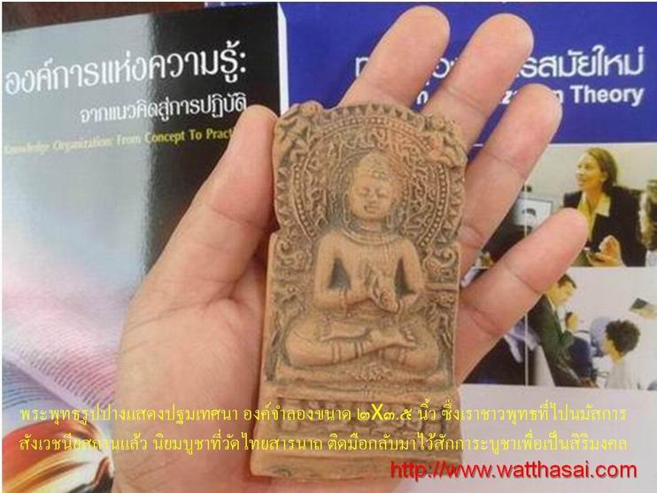
ฝ่ายมารดาของยสกุลบุตรตื่นขึ้นมาตอนเช้าไม่เห็นลูกชาย จึงบอกแก่สามีและจัดแจงให้คนใช้ไปตามหาทั้ง ๔ ทิศ ส่วนเศรษฐีบิดาของยสะ เดินไปตามลูกชายที่ป่าอิสิปตนมฤคทายวัน (โดยบังเอิญ) เห็นรองเท้าเข้าก็จำได้ จึงเข้าไปเฝ้าพระบรมศาสดา พระองค์ทรงเทศนา อนุปุพพีกถาและอริยสัจ ๔ ให้เศรษฐีได้ดวงตาเห็นธรรม (ธรรมจักษุ) แล้ว เศรษฐีจึงสรรเสริญพระธรรมเทศนา แล้วแสดงตนเป็นอุบาสกถึงรตนะ ๓ เป็นสรณะตลอดชีวิต จึงนับว่า เป็นอุบาสกคนแรกในโลกที่ถึงพระรัตนตรัยเป็นสรณะ เรียกว่า เตวาจิกอุบาสก (อุบาสกผู้ถึงรัตนะ ๓ เป็นที่พึ่งที่ระลึก) ในพระพุทธศาสนา เศรษฐียังไม่รู้ว่า ยสกุลบุตรหมดสิ้นกิเลสอาสวะแล้ว จึงบอกให้กลับบ้าน ฝ่ายยสกุลบุตรได้ยินเช่นนั้น จึงแลดูพระศาสดา พระองค์จึงตรัสบอกเศรษฐีว่า ยสกุลบุตรได้บรรลุพระอรหันต์แล้ว ( หมดสิ้นกิเลสอาสวะ ) ไม่ใช่ผู้จะกลับไปครองฆราวาสวิสัยอีก เศรษฐีได้ฟังเช่นนั้นจึงสรรเสริญว่า เป็นลาภของยสกุลบุตรแล้ว จึงทูลเชิญเสด็จสมเด็จพระบรมศาสดา พร้อมทั้งภิกษุสงฆ์ ไปฉันภัตตาหารในเรือนของตนในวันรุ่งขึ้น โดยมียสกุลบุตรเป็นผู้ตามเสด็จ ครั้นทราบว่าพระพุทธองค์ทรงรับด้วยดุษณียภาพแล้ว จึงถวายอภิวาท ทำปทักษิณแล้วกลับไป 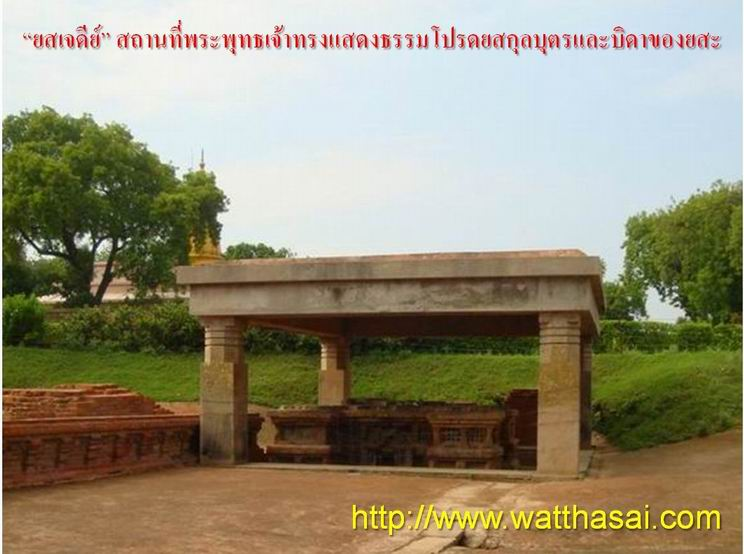
เมื่อเศรษฐีกลับไปแล้ว ยสกุลบุตรก็ทูลขออุปสมบท พระพุทธองค์ประทานด้วยพระดำรัสว่า เธอจงเป็นภิกษุมาเถิด ธรรมอันเรากล่าวดีแล้ว เธอจงประพฤติพรหมจรรย์เถิด ในที่นี้ไม่มีคำว่า เพื่อทำที่สุดแห่งทุกข์โดยชอบเถิด เพราะพระยสะเป็นพระอรหันต์ ถึงที่สุดแห่งทุกข์แล้ว (บรรลุพระอรหันต์) ตั้งแต่ยังไม่ได้อุปสมบท จึงไม่ต้องกล่าวพระวาจาเช่นนั้นอีก, ในเช้าของวันนั้น พระพุทธองค์พร้อมด้วยภิกษุสงฆ์มีพระยสะเป็นผู้ตามเสด็จ ได้ไปยังบ้านของเศรษฐี มารดาและภรรยาเก่าของพระยสะเข้าเฝ้า ซึ่งพระพุทธองค์ก็ทรงแสดงอนุปุพพีกถา และอริยสัจ ๔ โปรด เมื่อจบพระธรรมเทศนาหญิงทั้ง ๒ ได้ดวงตาเห็นธรรม (บรรลุโสดาปัตติผล) แล้ว จึงแสดงตนเป็นอุบาสิกา โดยถึงพระรัตนตรัยเป็นสรณะตลอดชีวิต นับเป็นอุบาสิกาคนแรกในโลกที่ถึงพระรัตนตรัยเป็นสรณะ เรียกว่า เตวาจิกอุบาสิกา พอเสวยพระกระยาหารเสร็จ ทรงแสดงธรรมโปรดคนทั้ง ๓ ให้เกิดความอาจหาญร่าเริงแล้วก็เสด็จกลับไปยัง ป่าอิสิปตนมฤคทายวัน แขวงเมืองพาราณสี แคว้นกาสี 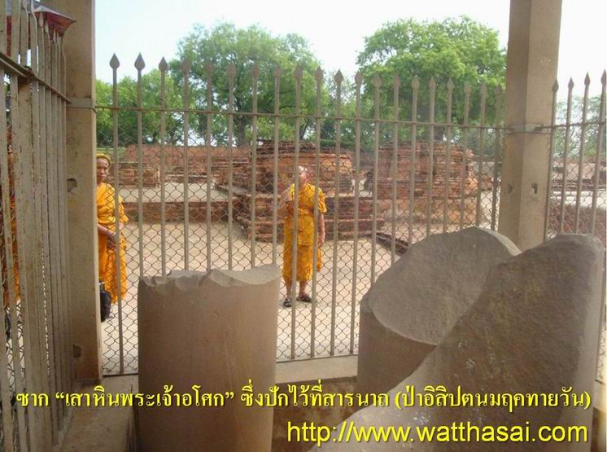 ซากปรักหักพัง "เสาหินพระเจ้าอโศก์" ซึ่งปักไว้เพื่อแสดงให้รู้ว่าพระพุทธเจ้าทรงแสดงปฐมเทศนาที่ตรงนี้ ปัจจุบันตั้งอยู่ที่ ต.สารนาถ สหายของพระยสบรรพชา ฝ่ายสหายของพระยสะอีก ๕๔ คน (ที่ปรากฏชื่อ ๔ คน คือ วิมละ, สุพาหุ, ปุณณชิ, ควัมปติ, นอกจากนี้ไม่ปรากฏชื่ออีก ๕๐ คน) ได้ทราบข่าวว่ายสกุลบุตรบวชแล้ว จึงคิดว่า ธรรมวินัยที่ยสกุลบุตรประพฤติคงไม่เป็นของเลวทราม จึงพร้อมใจกันไปสู่สำนักของพระยสะ ๆ จึงพาไปเฝ้าพระบรมศาสดา พระพุทธเจ้าก็ทรงสั่งสอนจนท่านเหล่านั้นได้ดวงตาเห็นธรรม แล้วทรงประทานเอหิภิกขุอุปสัมปทาและสั่งสอนให้สำเร็จเป็นพระอรหันต์ทั้งสิ้น ครั้งนั้นได้มีพระอรหันต์เกิดขึ้นในโลกแล้ว ๖๑ องค์รวมทั้งพระบรมศาสดาด้วย หมายเหตุ- สหายของพระยสะออกบวชตามพระยสะครั้งแรก ๔ คน และออกบวชภายหลังอีก ๕๐ คน รวมทั้งสิ้น ๕๔ คน ส่งสาวกไปประกาศพระศาสนา เมื่อพระสาวกมีมากพอที่จะส่งไปประกาศพระศาสนาได้แล้ว พระพุทธองค์จึงตรัสเรียกสาวกทั้ง ๖๐ องค์มาแล้วตรัสว่า ภิกษุทั้งหลาย เราได้พ้นแล้วจากบ่วงทั้งปวง ทั้งที่เป็นของทิพย์และเป็นของมนุษย์ แม้เธอทั้งหลายก็เหมือนกัน เธอทั้งหลายจงเที่ยวจากริกไปตามชนบท เพื่อประโยชน์และความสุขแก่ชนเป็นอันมาก แต่อย่าไปทางเดียวกัน ๒ องค์ จงแสดงธรรมที่มีคุณในเบื้องต้น ท่ามกลาง และที่สุด จงประกาศพรหมจรรย์พร้อมทั้งอรรถและพยัญชนะ อันบริสุทธิ์ บริบูรณ์โดยสิ้นเชิง สัตว์ทั้งหลายที่มีกิเลสบังปัญญาดุจธุลีในจักษุน้อยมีอยู่ เพราะโทษทีไม่ได้ธรรมย่อมเสื่อมจากคุณที่จะพึงได้ พึงถึง ผู้รู้ทั่วถึงธรรมจักมีอยู่ แม้เราก็จะไปสู่ตำบลอุรุเวลาเสนานิคมเพื่อแสดงธรรม พระสาวกทั้ง ๖๐ องค์นั้นรับคำสั่งแล้วก็เที่ยวจาริกไปในชนบทต่าง ๆ แสดงธรรม ประกาศพระศาสนา ทรงประทานอุปสมบทด้วยไตรสรณคมน์ เมื่อสาวกเหล่านั้นได้จาริกไปประกาศระศาสนาตามบ้าน นิคมชนบท ได้มีกุลบุตรเลื่อม ใสใคร่จะอุปสมบทในพระพุทธศาสนา ก็ไม่สามารถจะให้อุปสมบทได้ จึงพามาเฝ้าพระพุทธเจ้าเพื่อให้ทรงอุปสมบทให้ พระองค์ทรงเห็นความลำบากนั้น จึงประทานอนุญาตให้พระสาวกอุปสมบทให้กุลุบตรด้วยวิธี ติสรณคมนูปสัมปทา คือ ถึงไตรสรณคมน์ มีวิธีทำดังนี้คือ ในเบื้องต้นให้กุลบุตรปลงผมและหนวดเสียก่อน แล้วให้นุ่งผ้าที่ย้อมด้วยน้ำฝาด แล้วนั่งกระโหย่ง ประนมมือไหว้เท้าภิกษุทั้งหลาย แล้วสอนให้ว่ากล่าวคำถงไตรสรณคมน์ว่า ข้าพเจ้าถึงพระพุทธเจ้าเป็นสรณะ ฯลฯ ดังนี้เป็นต้น การบวชนี้เป็นการอนุญาตให้สาวกเป็นพระอุปัชฌาย์บวชเป็นครั้งแรกในพระพุทธศาสนา งแต่นั้นมาจึงมีวิธีอุปสบมบทเป็น ๒ อย่าง คือ
๑.เอหิภิกจุอุปสัมปทา ที่พระพุทธเจ้าทรงประทานเอง ทรงโปรดภัททวัคคีย์ (สหาย ๓๐ คน) พระพุทธองค์ประทับอยู่ที่เมืองพาราณสีพอสมควรแก่พุทธประสงค์แล้ว จึงได้เสด็จไปยัง ตำบลอุรุเวลาเสนานิคม ในระหว่างทางเสด็จแวะพักที่โคนต้นไม้ต้นหนึ่ง ในไร่ฝ้ายแห่งหนึ่ง ในขณะนั้นเอง กุลุบตรผู้เป็นสหายกัน ๓๐ คน ซึ่งได้ชื่อว่า ภัททวัคคีย์ พร้อมทั้งภรรยาพากันเล่นน้ำอยู่ในที่แห่งหนึ่ง อีกคนหนึ่งยังไม่มีภรรยาจึงเอาหญิงแพศยามาเป็นภรรยา เมื่อชนเหล่านั้นเผลอไม่ได้รักษา หญิงนั้นก็ลักเอาห่อเครื่องประดับแล้วหนีไป สหายเหล่านั้นออกติดตามหา จึงไปพบพระพุทธองค์และทูลถามหาหญิงนั้น ซึ่งพระพุทธเจ้าตรัสถามถึงสาเหตุ กุลบุตรเหล่านั้นก็กราบทูลเรื่องราวทั้งหมดให้ทรงทราบ พระองค์จึงตรัสว่า ท่านจะแสวงหาหญิงนั้นหรือ ? หรือว่าแสวงหาตนเองดีกว่า ? กุลบุตรเหล่านั้นทูลว่า แสวงหาตนเองดีกว่า พระองค์จึงตรัสแสดงอนุปุพพิกถาและอริยสัจ ๔ โปรดจนให้เกิดดวงตาเห็นธรรม แล้วประทานอุปสมบท แล้วส่งไปในทิศต่าง ๆ เพื่อประกาศพระสาสนาต่อไป โปรดชฎิล ๓ พี่น้องพร้อมทั้งบริวาร ส่วนพระพุทธองค์เสด็จไปโดยลำดับถึงตำบลอุรุเวลาเสนานิคม ซึ่งเป็นที่อาศัยอยู่ของชฎิล ๓ พี่น้องกับหมู่ศิษย์ ซึ่งแยกกันสร้างอาศรมอยู่กับบริวารของตน ใกล้ฝั่งแม่น้ำเนรัญชรา ตามลำดับดังนี้
๑.พี่ใหญ่ชื่อ อุรุเวลกัสสปะ
มีศิษย์ ๕๐๐ ตั้งอาศรมอยู่ที่ ต.อุรุเวลาเสนานิคม พระพุทธเจ้าทรงแสดงธรรมโปรดอุรุเวลกัสสปะด้วยวิธีต่าง ๆ แสดงให้เห็นว่าลัทธิที่ท่านอุรุเวลกัสสปะถือนั้นไม่มีแก่นสาร จนท่านอุรุเวลกัสสปะเกิดความสลดใจ พร้อมทั้งบริวารลอยผมที่เกล้าเป็นชฎาและเครื่องบริขารบำเพ็ญพรตและบูชาไฟทิ้งเสียในแม่น้ำ แล้วทูลขออุปสมบท พระพุทธเจ้าทรงประทานอุปสมบทให้ด้วยวิธีเอหิภิกขุอุปสัมปทาทั้งสิ้น ฝ่ายนทีกัสสปะผู้เป็นน้องชายกลางเห็นเครื่องบริขารของพี่ชายลอยน้ำไป จึงคิดว่าเกิด อันตรายแก่พี่ชายจึงพาบริวาร ๓๐๐ ตนมาสู่สำนักของพี่ชาย ก็ได้เห็นพี่ชายและบริวารถือเพศเป็น พระภิกษุเสียแล้ว ถามดูได้ความว่าพรหมจรรย์เป็นสิ่งประเสริฐ จึงพร้อมกับบริวารลอยบริขารทิ้งเสียแล้วทูลขออุปสมบท พระพุทธเจ้าก็ทรงอนุญาตให้เป็นพระภิกษุด้วยวิธีเอหิภิกขุอุปสัมปทาเช่นกัน ฝ่ายคยากัสสปะ ผู้เป็นน้องชายเล็กเห็นบริขารของพี่ชายลอยไปตามกระแสน้ำ จึงคิดว่าเกิดอันตรายแก่พี่ชาย จึงพาบริวาร ๒๐๐ ตน ไปสู่สำนักของพี่ชขาย เห็นพี่ชายทั้ง ๒ และบริวารได้ถือเพศเป็นพระภิกษุเสียแล้ว ถามดูก็ได้ความว่าพรหมจรรย์เป็นสิ่งประเสริฐ จึงได้พร้อมกับบริวารลอยบริขารทั้งเสีย แล้วทูลขออุปสมบท ซึ่งพระพุทธเจ้าก็ได้ทรงประทานด้วยวิธีเอหิภิกขุอุปสัมปทา ทรงแสดงอาทิตตปริยายสูตรแก่พระปุราณชฎิล เมื่อพระพุทธองค์ประทับอยู่ที่ตำบลอุรุเวลาสนานิคมพอสมควรแล้วจึงพาภิกษุเหล่านั้นไปสู่ตำบลคยาสีสะ ใกล้แม่น้ำคยา แล้วประทับอยู่ในที่นั้น ตรัสเรียกพระภิกษุเหล่านั้นมาแล้วทรงแสดงอาทิตตปริยายสูตร เพื่อจะให้เหมาะแก่พระปุราณชฎิลเหล่านั้น ผู้เคยบูชาไฟอันเป็นของร้อนมาก่อน เพื่อเปลื้องความเห็นในลัทธิบูชาไฟของพระปุราณชฎิลเหล่านั้นเสีย ใจความแห่งพระสูตรนั้นว่า อายตนะภายในและอาตยนะภายนอกเป็นของร้อน ท่านกล่าวว่าร้อนเพราะไปคือ ราคะ โทสะ โมหะ และร้อนเพราะความเกิด แก่ เจ็บ ตาย ความเศ้ราโศก ร่ำไร รำพัน เสียใจ คับใจ ไฟกิเลสเหล่านี้มาเผาให้ร้อนดังนี้เป็นต้น เมื่อพระองค์ทรงแสดงพระธรรมเทศนาจบลง พระปุราณชฎิลทั้ง ๑,๐๐๓ รูป ก็ได้สำเร็จเป็นพระอรหันต์ทั้งสิ้น ปริจเฉทที่ ๘
ทรงโปรดพระเจ้าพิมพิสาร พระพุทธองค์ครั้นประทับอยู่ที่ตำบลคยาสีสะ พอสมควรแก่พระอัธยาศัยแล้ว พร้อมด้วยพระสาวกก็เสด็จออกจากที่นั้น ถึงกรุงราชคฤห์โดยลำดับ ประทับอยู่ที่ ลัฏฐิวันสวนตาลหนุ่ม ขณะนั้นพระเจ้าพิมพิสาร พระเจ้าแผ่นดินแคว้นมคธ ได้สดับกิตติศัพท์นั้นแล้วพร้อมด้วยราชบริพาร และประชาชนก็เสด็จไปเฝ้าพระพุทธเจ้า ทรงนมัสการพระพุทธเจ้าแล้วประทับนั่งในที่อันสมควรแห่งหนึ่ง ส่วนราชบริพารและประชาชนนั้นต่างแสดงอาการต่าง ๆ กัน เช่น บางพวกถวายบังคม บางพวกเพียงแต่กล่าววาจาปราศรัย บางพวกเพียงแต่ประนมมือ บางพวกเพียงแต่ประกาศชื่อและโคตรของตน บางพวกก็นั่งนิ่งเฉยอยู่ พระพุทธเจ้าทรงเห็นอาการของบริพารและประชาชนเหล่านั้นยังไม่สมควรจะรับพระธรรมเทศนาได้ มีพระประสงค์จะให้พระอุรุเวลกัสสปะซึ่งเป็นที่นับถือของคนเหล่านั้นประกาศความไม่มีแก่นสารของลัทธิเก่าให้ทราบ จึงได้ตรัสเรียกพระอุรุเวลกัสสปะมา เมื่อท่านพระอุรุเวลกัสสปะทราบแล้วจึงลุกขึ้นทำผ้าเฉวียงบ่ากราบลงที่พระบาทของพระพุทธเจ้า แล้วทูลประกาศว่า พระองค์เป็นพระศาสดาของข้าพระพุทธเจ้า, ข้าพระพุทธเจ้าเป็นสาวกของพระองค์ พวกบริวารเหล่านั้นจึงได้น้อมจิตใจคอยรับพระธรรมเทศนา, พระพุทธเจ้าจึงทรงแสดง อนุปุพพิกถาและอริยสัจ ๔ เมื่อจบพระธรรมเทศนา พระเจ้าพิมพิสารและบริวาร ๑๑ ส่วนได้ดวงตาเห็นธรรม, อีกส่วนหนึ่งตั้งอยู่ในไตรสรณคมน์ (บริวารของพระเจ้าพิมพิสารแบ่งเป็น ๑๒ ส่วนหรือ ๑๒ นหุต) ความปรารถนาของพระเจ้าพิมพิสาร ครั้งนี้พระประสงค์หรือความปรารถนาของพระเจ้าพิมพิสารได้สำเร็จบริบูรณ์ พระองค์จึงกราบทูลแก่พระพุทธองค์ว่าครั้งเมื่อยังเป็นพระราชกุมาร พระองค์ได้ตั้งความปรารถนาไว้ ๕ ประการ/อย่าง คือ
๑.ขอให้ข้าพเจ้าได้รับอภิเษกเป็นพระเจ้าแผ่นดิน
แคว้นมคธนี้เถิด 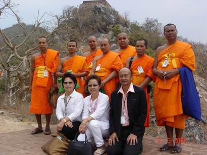 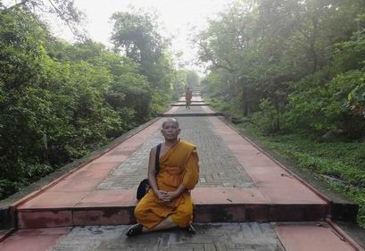 ถวายสวนเวฬุวัน พระเจ้าพิมพิสารเมื่อได้กราบทูลดังนั้นแล้ว จึงได้แสดงตนเป็นอุบาสกและกราบทูลเชิญพระพุทธเจ้าพร้อมด้วยพระภิกษุสงฆ์เพื่อเสวยที่พระราชนิเวศน์ในวันรุ่งขึ้น เสด็จจากที่ประทับแล้วถวายอภิวาท ทำประทักษิณแล้วเสด็จกลับ ในตอนเช้าวันรุ่งขึ้นพระองค์ทรงอังคาสพระพุทธเจ้าพร้อมพระภิกษุสงฆ์ด้วยอาหารอันประณีตด้วยพระหัตถ์พระองค์เอง เสร็จแล้วทรงจับพระเต้าทอง หลังน้ำทักษิโณทกถวายพระราชอุทยานเวฬุวัน (สวนไม้ไผ่) เพื่อให้เป็นที่อยู่อาศัยของพระภิกษุสงฆ์มีพระพุทธเจ้าเป็นประมุข พระพุทธเจ้าทรงรับและทรงแสดงธรรมีกถาให้พระเจ้าพิมพิสารรื่นเริงในทาน แล้วเสด็จไปประทับอยู่ที่เวฬุวันนั้น วัดเวฬุวัน หรือบางครั้งเรียกว่า วัดเวฬุวนาราม นี้ เป็นวัดแห่งแรกในพระพุทธศาสนา และนับตั้งแต่บัดนั้นเป็นต้นมา พระพุทธเจ้าก็ทรงอนุญาตให้พระภิกษุสงฆ์รับวัดที่ทายกถวายได้ตามปรารถนาจนกระทั่งปัจจุบันนี้ ได้อัครสาวก ๒ องค์ ครั้งนั้น มีมาณพสกุลพราหมณ์ในกรุงราชคฤห์ เป็นสหายกัน ๒ คนได้แก่
๑.อุปติสสะ หรือ สารีบุตร
มีบิดาชื่อ วังคันตะ มารดาชื่อ นางสารีพราหมณี มีบ้านอยู่ที่ ตำบลนาลกะ
หรือ นาลันทา ท่านทั้ง ๒ พร้อมด้วยบริวารไปบวชอยู่ที่สำนักสัญชัยปริพพาชก ที่กรุงราชคฤห์ เรียนจบลัทธิของอาจารย์สัญชัยปริพพาชกแล้วแต่ยังไม่ได้บรรลุธรมมวิเศษอันเป็นที่พอใจ จึงนัดหมายกันหรือให้สัญญากันว่า ผู้ใดได้บรรลุธรรมวิเศษก่อน ผู้นั้นจงบอกแก่อีกผู้หนึ่ง วันหนึ่ง อุปติสสะเดินไปพบพระอัสสชิกำลังเดินบิณฑบาตอยู่มีอาการน่าเลื่อมใส จึงติดตามไปข้างหลัง เมื่อถึงเวลาอันสมควรจึงเข้าไปถามว่าท่านผู้มีอายุ อินทรีย์ของท่านผ่องใสยิ่งนัก ผิวของท่านหมดจดดีนัก ท่านบวชเฉพาะใคร ? ใครเป็นศาสดาของท่าน ? ท่านชอบใจธรรมของใคร ? พระอัสสชิตอบว่า ผู้มีอายุ เราบวชเฉพาะพระมหาสมณะ ผู้เป็นโอรสของศากยะ พระองค์เป็นศาสดาของเรา เราชอบใจธรรมะของพระองค์ อุปติสสะถามต่อไปว่า พระศาสดาของท่านสอนอย่างไร ? พระอัสสชิตอบว่า ผู้มีอายุ เราเป็นคนใหม่ บวชยังไม่นาน เพิ่งมาสู่พระธรรมวินัยนี้ ไม่อาจแสดงธรรมโดยพิศดารได้ จักกล่าวแต่โดยย่อ จึงกล่าวว่า ธรรมเหล่าใดเกิดแต่เหตุ พระศาสดาทรงแสดงเหตุแห่งธรรมนั้นและความดับแห่งธรรมนั้น พระองค์ทรงสั่งสอนอย่างนี้. อุปติสสะพอได้ฟังดังนั้นก็ได้ดวงตาเห็นธรรมว่า สิ่งใดสิ่งหนึ่งมีความเกิดขึ้นเป็นธรรมดา สิ่งนั้นทั้งหมดมีความดับไปเป็นธรรมดา จึงถามพระเถระว่า เดี๋ยวนี้พระศาสดาประทับอยู่ที่ไหน ? เมื่อท่านพระอัสสชิตอบว่า อยู่ที่พระเวฬุวัน จึงกล่าวว่า ถ้าเช่นนั้น ขอให้ท่านอาจารย์จงกลับไปก่อน ผมจะกลับไปบอกสหายและจะพากันไปเฝ้าพระบรมศาสดา เมื่อพระอัสสชิกลับไปแล้ว ท่านอุปติสสะจึงกลับไปสู่อารามของปริพพาชกอันเป็นที่อยู่ แล้วบอกข่าวที่ตนเองได้ไปพบพระอัสสชิและพระอัสสชิได้แสดงธรรมให้ฟัง แล้วได้แสดงธรรมให้โกลิตะผู้เป็นสหายฟัง และพอจบลงท่านโกลิตะก็ได้ดวงตาเห็นธรรม (บรรลุโสดาบัน) แล้วทั้ง ๒ จึงพากันไปลาสัญชัยปริพพาชกและชวนไปเฝ้าพระพุทธเจ้า สัญชัยปริพพาชกห้ามไว้อ้อนวอนให้อยู่ด้วยกันหลายครั้งก็ไม่ฟัง แล้วได้พาบริวารไปเวฬุวันเฝ้าพระพุทธเจ้า ทูลขออุปสมบท ซึ่งพระพุทธเจ้าก็ทรรงอนุญาตให้เป็นภิกษุด้วยวิธีเอหิภิกขุอุสัมปทา เมื่อบวชแล้วพระภิกษุส่วนมากนิยมเรียกท่าน พระอุปติสสะ ว่าพระสารีบุตร เพราะเป็นบุตรของนางสารีพราหมณี และเรียกท่านโกลิตะ ว่า พระโมคคัลลานะ เพราะเป็นบุตรของนางโมคคัลลีพราหมณี ภิกษุผู้เป็นบริวารของท่านเหล่านั้น เมื่อบวชแล้วไม่นานได้ฟังธรรมเทศนาแล้วบำเพ็ญเพียรก็ได้สำเร็จเป็นพระอรหันต์ก่อนท่านพระสารีบุตรและพระโมคคัลลานะ ฯ พระโมคคัลลานะนับแต่วันอุปสมบทได้ ๗ วัน ไปบำเพ็ญเพียรอยู่ที่บ้านกัลลวาลมุตตคาม แคว้นมคธ อ่อนใจนั่งโงกง่วงอยู่ พระพุทธเจ้าเสด็จไปที่นั่น และทรงแสดงอุบายระงับความง่วง ๘ ประการให้ฟัง ท่านพระโมคคัลลานะได้ฟังอุบายแก้ง่วง และปฏิบัติตามพระโอวาทที่ทรงสั่งสอน ไม่นานก็ได้สำเร็จพระอรหันต์ในวันนั้นเอง ภายหลังท่านได้รับยกย่องเป็นพระอัครสาวกฝ่ายซ้าย ผู้เลิศในทางมีฤทธิ์มาก ส่วนพระสารีบุตร (อุปติสสะ) หลังจากอุปสมบทแล้วได้ ๑๕ วัน ท่านนั่งถวายงานพัด อยู่เบื้องหลังพระพุทธเจ้า ที่ ถ้ำสุกรขาตา เชิงภูเขาคิชฌกูฏ กรุงราชคฤห์ ได้ฟังธรรมอันเป็นอุบายแห่งการละทิฏฐิ ๓ ประการ และเวทนาปริคคหสูตร ที่พระพุทธเจ้าทรงแสดงแก่ปริพพาชกคนหนึ่งซึ่งมีชื่อว่า ที่ฆนขะ อัคคิเวสนโคตร ก็ใช้ปัญญาพิจารณาไปตามกระแสพระธรรมเทศนาก็ได้บรรลุเป็นพระอรหันต์ ส่วนปริพพาชกทีฆนขะ อัคคิเวสนโคตรนั้น ได้ดวงตาเห็นธรรม หมดความสงสัยในพระพุทธศาสนา ทูลสรรเสริญพระธรรมเทศนาและแสดงตนเป็นอุบาสกแล้วหลีกไป ส่วนพระสารีบุตร นั้นต่อมาภายหลังได้รับยกย่องจากพระพุทธเจ้าว่า เป็นอัครสาวกฝ่ายขวา เป็นผู้เสิศในทางมีปัญ ญามาก มัชฌิมโพธิกาล ปริจเฉทที่ ๙ ทรงบำเพ็ญพุทธกิจในมคธชนบท
ในพุทธกาล มคธชนบทตั้งอยู่ในมัธยมประเทศ มีกรุงราชคฤห์เป็นเมืองหลวง มีพระเจ้าพิมพิสาร ทรงอำนาจสิทธิขาดในการปกครอง หลังจากที่พระพุทธเจ้าทรงโปรดชฎิล ๓ พี่น้องและบริวารให้ได้บรรลุอรหัตตผล (พระอรหันต์) แล้ว ก็ได้เสด็จพุทธจาริกไปประดิษฐานพระพุทธศาสนาในแคว้นมคธ ประทานอุปสมบทแก่มหากัสสปะ ในสมัยนั้นยังมีมาณพผู้หนึ่งมีชื่อว่า ปิปผลิมาณพ (มหากัสสปะ) เป็นบุตรของกบิลพราหมณ์ กัสสปโคตร เมื่ออายุได้ ๒๐ ปี ได้ทำอาวาหมงคลกับนางภัททกาปิลานี อายุ ๑๖ ปี บุตรีของพราหมณ์โกสิยโคตร ชาวแคว้นมคธเช่นกัน ทั้ง ๒ สกุลนี้เป็นตระกูลที่ร่ำรวย ครั้นอยู่ด้วยกันมาไม่มีบุตรเลย ภายหลัง ๒ สามีภรรยาก็เกิดความเบื่อหน่าย ด้วยเห็นว่าคอยแต่จะนั่งรับบาปกรรม จากการงานที่บริวารกระทำมา จึงชวนกันสละสมบัติแล้วออกบวช โดย ปิปผลิมาณพมุ่งหมายใจบวชอุทิศพระอรหันต์ในโลก ท่านปิปผลิมาณพได้พบพระพุทธเจ้าที่ใต้ร่มไม้ไทรชื่อ พหุปุตตกนิโครธ ในระหว่างกรุงราชคฤห์และเมืองนาลันทาต่อกัน และพระพุทธเจ้าทรงอนุญาตให้เป็นภิกษุในพระพุทธศาสนาด้วยประทานโอวาท ๓ ข้อ (เรียกว่า เอหิภิกขุอุปสัมปทา) คือ
๑. กัสสปะ เธอพึงศึกษาว่า
เราจักเข้าไปตั้งความละอายและความยำเกรงไว้ในภิกษุทั้งที่เป็นผู้เฒ่า
ผู้ปานกลาง และผู้ใหม่อย่างแรงกล้า. ครั้นทรงตรัสสอนอย่างนี้แล้วก็เสด็จหลีกไป ส่วนท่านพระปิปผลิก็บำเพ็ญเพียรและในวันที่ ๘ นับแต่วันอุปสมบท ก็ได้สำเร็จเป็นพระอรหันต์ เมื่อท่านเข้ามาสู่พระธรรมวินัยนี้พระภิกษุทั้งหลายนิยมเรียกท่านว่า พระมหากัสสปะ ต่อมาท่านพระมหากัสสปะได้รับยกย่องจากพระพุทธเจ้าว่า เป็นผู้เลิศทางฝ่ายทรงธุดงค์คุณ และหลังจากพระพุทธเจ้าปรินิพพานแล้ว ท่านพระมหากัสสปะก็ได้เป็นประธานสงฆ์ในการทำปฐมสังคายนา (ทำสังคายนาครั้งที่ ๑) หลังจากวันพระพุทธเจ้าปรินิพพานได้ ๓ เดือน มหาสันนิบาตแห่งพระสาวก ครั้งหนึ่ง เมื่อพระพุทธเจ้าประทับอยู่ที่ วัดเวฬุวัน กรุงราชคฤห์ เมืองหลวงแห่งแคว้นมคธ ได้มีการประชุมพระสาวกครั้งใหญ่ (มหาสันนิบาต) คราวหนึ่งเรียกว่า จาตุรงคสันนิบาต แปลว่า การประชุมที่ประกอบด้วยองค์ ๔ ประการ ได้แก่
๑. พระ ๑,๒๕๐ องค์ ที่มาประชุมเป็นพระอรหันต์ทั้งสิ้น.
๑.การไม่ทำบาปทั้งปวง ทั้ง ๓ อย่างนี้จัดเป็นหัวใจของพระพุทธศาสนา (และวันจาตุรงคสันนิบาตนี่เองแหละครับเป็นมูลเหตุให้เราชาวพุทธได้ประกอบพิธี วันมาฆขูชา (วันเพ็ญ เดือน ๓ ) มาจนกระทั่งปัจจุบันนี้ /) ทรงอนุญาตเสนาสนะ ในตอนต้นพุทธกาลภิกษุสงฆ์สาวกไม่มีที่อยู่เป็นหลักแหล่งเมื่อพระเจ้าพิมพิสาร ถวายเวฬุวันให้เป็นที่ประทับพร้อมด้วยภิกษุสงฆ์ ต่อมาเศรษฐีชาวเมืองราชคฤห์ หรือ ราชหกเศรษฐี เลื่อมใสจึงเข้าไปถามพระสงฆ์ เมื่อทราบว่าพระพุทธเจ้ายังไม่ทรงบอนุญาต จึงขอให้ภิกษุสงฆ์เหล่านั้นไปทูลขออนุญาตและให้บอกแก่เขาด้วย พระภิกษุเหล่านั้นจึงเข้าไปทูลพระพุทธเจ้า ซึ่งพระองค์ทรงปรารภเรื่องนี้จึบงทรงแสดงธรรมโปรดภิกษุเหล่านั้น แล้วทรงอนุญาตเสนาสนะไว้ ๕ ชนิด คือ.-
๑.วิหาร : กุฏีมีหลังคา
มีปีก ๒ ข้างอย่างปกติ
เมื่อพระพุทธเจ้าทรงอนุญาตเสนาสนะอย่างนั้นแล้ว
หภหิกกษุเหล่านั้นจึงได้แจ้งข่าวให้เศรษฐีได้ทราบ และครั้นเศรษฐีได้ทราบเช่นนั้นแล้วจึงได้ให้คนปลูกวิหารขึ้นถวายภิกษุ
๖๐ หลัง สำหรับพระสงฆ์ผู้มาจากทิศทั้ง ๔ และทูลนิมนต์พระพุทธเจ้าพร้อมภิกกษุสงฆ์ไปรับภัตตาหารที่เรือนของเศรษฐี
และพระพุทธเจ้าทรงรับนิมนต์และไปเสวยในวันรุ่งขึ้น หลังจากเสวยพระกระยาหารแล้วทรงแนะวิธีปฏิบัติในวิหารทานและทรงอนุโมทนาในการถวายวิการทาน
(การถวายวิหารให้เป็นทาน) โดยมีใจความว่า.-การสร้างวิหารถวายแด่พระสงฆ์ผู้มาจากทิศทั้ง
๔ ย่อมมีประโยชน์ คือ.- ทรงแสดงวิธีทำปุพพเปตพลี การทำบุญอุทิศส่วนนบุญให้แก่ผู้ล่วงลับไปแล้ว เรียกว่า ปุพพเปตพลี ในทางพระพุทธศาสนามีเรื่องเล่าว่า พระเจ้าพิมพิสารได้ทรงเป็นผู้กระทำเป็นครั้งแรก คือเมื่อพระพุทธเจ้าเสด็จประทับอยู่ที่วัดเวฬุวันนั้น พระเจ้าพิมพิสาร ได้ทูลอาราธนาพระพุทธเจ้าพร้อมด้วยภิกษุสงฆ์ ไปฉันภัตตาหารที่พระราชวัง เมื่อพระสงฆ์ฉันภัตตาหารเสร็จแล้ว พระองค์ทรงบริจาคไทยธรรมต่าง ๆ รวมทั้งผ้าจีวรแก่พระภิกษุสงฆ์ แล้วทรงอุทิศส่วนบุญแก่พระญาติผู้ล่วงลับไปแล้ว พระพุทธองค์ทรงอนุโมทนาว่า.- ญาติก็ดี มิตรก็ดี เมื่อระลึกถึงอุปการะที่ท่านกระทำแลัวในกาลก่อนว่า ท่านได้ให้แล้วแก่เราท่านได้ทำแก่เรา ท่านเปํนญาติ เป็นมิตร เป็นเพื่อนของเรา พึงให้ทักษิณาเพื่อชนผู้ล่วงลับไปแล้ว,ไม่พึงทำการร้องให้เศร้าโศกรำพันถึง เพราะการทำอย่างนั้น (ร้องให้ เศร้าโศก รำพันถึง)ไม่เป็นประโยนชน์แก่ชนผู้ล่วงลับไปแล้ว ญาติทั้งหลายย่อมตั้งอยู่อย่างนั้นเอง. ส่วนทักษิณาที่ท่านทั้งหลายบิจาก ทำให้ตั้งไว้ดีในพระสงฆ์นี้ ย่อมสำเร็จประโยชน์แก่ชนผู้ล่วงลับไปนั้น โดยฐานะสิ้นกาลนาน.ท่านทั้งหลายได้แสดงญาติธรรม ได้ทำบูชาชนผู้ล่วงลับไป(เปตชน)/ได้เพิ่มกำลังให้แก่ภิกษุทั้งหลาย เป็นอันได้บุญไม่น้อยเลย ๆ ส่วนบุญที่อุทิศให้แก่ผู้ที่ล่วงลับไปแล้วนั้น จะเกิดผลแก่ผู้ที่ล่วงลับไปหรือไม่ประการใดนั้น ทางพระพุทธศาสนาสอนว่า เปตชน(ผู้ล่วงลับไปแล้ว)ไปเกิดในกำเนิดอื่น ทั้งที่เปป็นทุคติและสุคติ ย่อมเป็นอยู่ด้วยอาหารในคติที่เขาเกิด. ย่อมไม่ได่รับผลแห่งทานที่ทายกอุทิศถึงนั้น นี้พอแสดงให้เห็นว่าเนื่องมาจากการทำศราทธะอุทิศถึงบุรพบิดร เปตชน (ผู้ที่ล่วงลับไปแล้ว)ชนิดนนี้จำพวกเดียวที่เขาทำทานแล้วอุทิศจึงถึง จำพวกอื่นอย่างเลวก็เป็นสัตว์นรก อย่างดีก็เป็นเทวดา นั้นก็อุทิศไม่ถึง เทวดาได้รับแต่เรื่องสงเวย พึงมีมาในพระพุทธศาสนาดังที่แนะให้ทำทักษิณาแล้วอุทิศให้เทวดานั่นเอง ในอรรถกถาท่านแก้แถมว่า ถึงแม้เปตชน (ผู้ที่ล่วงบับไปแล้ว) ผู้เกิดในปิตติวิสยะจะได้รับผลทานนั้น ก็ต้องพร้อมด้วยสมบัติ ๓ ประการ ได้แก่
๑.ทายกบริจาคไทยธรรม (ทาน)
แล้วต้องอุทิศส่วนบุญไปให้ แต่ถึงจะอย่างไรก็ตาม ทานที่คนเราบริจาคหรือกระทำแล้วก็ย่อมจะไม่ไร้ผลประโยชน์แน่นอน และผู้ที่ทำทักษิณา(ผู้ทำบุญอทิศ)นั้น นับว่าได้แสดงออก ๓ ประการ คือ.-
๑ได้แสดงญาติธรรมให้ปรากฏ ซี่งนับว่าเป็นการกระทำที่ได้บุญไม่น้อยเลยทีเดียว. การทำปุพพเปตพลี ย่อมบำรุงความรักความนับถือในบุรพบิดรของตนให้เจริญรุ่งเรืองกุศลส่วนความกตัญญูกตเวทิตา เป็นทางมาแห่งความเจริญรุ่งเรืองแห่งสกุลวงศ์ พระพุทธเจ้าจึงได้ทรงอนุมัติให้เราชาวพุทธได้กระทำด้วยประการฉะนี้. ทรงมอบให้สงฆ์เป็นใหญ่ในสังฆกรรม วันหนึ่งพระพุทธเจ้าทอดพระเนตรเห็นราธพราหมณ์ ซึ่งมีร่างกายซูบผอม มีผิวพรรณเศร้าหมองจึงตรัสถามได้ความว่า อยากจะบวช แต่ไม่มีใครบวชให้ จึงตรัสสั่งให้พระสารีบุตรเป็นพระอุปัชฌาย์ทำการบวชให้ราธพราหมณ์ ครั้นตรัสอย่างนี้แล้ว ก็ตรัสสั่งให้เลิกการอุปสมบทด้วยวิธีติสรณคมนูปสัมปทา แล้วทรงอนุญาตให้อุปสมปทด้วยวิธีประชุมสงฆ์ ตั้งญัตติ ๑ ครั้ง และสวดอนุสาวนา (สวดประกาศ) ๓ ครั้ง วิธีนี้เรียกว่า ญัตติจตุตถกรรมวาจา แปลว่า อุปสมบทด้วยการสงฆ์ มีวาจาประการเป็นที่ ๔ แม้ในสังฆกรรมอื่น ๆ พระพุทธเจ้าก็ทรงมอบอำนาจให้แก่สงฆ์ โดยแบ่งสงฆ์เป็น ๔ ประเภท ได้แก่
๑.จตุวรรค หมายถึง พระภิกษุ
4 รูป สำหรับสังฆกรรมทั่วไป เว้นการให้อุปสมบท,ปวารณา, กรานกฐิน, อัพภาน สังฆกรรมทุกประเภท พระภิกษุทุกรูปที่เข้าประชุม ต้องเห็นชอบ อนุมัติจึงจะใช้ได้ ถ้ามีผู้แย้งแม้เพียงรูปเดียว สังฆกรรมนั้นก็เป็นอันใช้ไม่ได้ โดยสรุปแล้วการบวชในพระพุทธศาสนามี ๓ วิธี คือ
๑.เอหิภิกขุอุปสัมปทา พระพุทธเจ้าทรงอนุญาตให้พระสงฆ์สาวกเป็นผู้ให้การบวชเป็นคนแรกคือ
พระอัญญาโกณฑัญญะ (ปฐมสาวก) ทรงสอนพระศาสนาผ่อนลงมาถึงคดีโลก ครั้งหนึ่ง พระพุทธเจ้าประทับอยู่ที่ในกรุงราชคฤห์ ได้ทรงแสดงวิธีนมัสการ(ไหว้)ทิศทั้ง ๖ ในศาสนของพระอริยเจ้าแก่ สิงคาลมาณพ ผู้มีผ้านุ่ง ผ้าห่ม และผมอันเปียก ไหว้ทิศทั้ง ๖ อยู่ตามคำสอนของบิดา พระองค์ตรัสว่า ในศาสนาของพระอริยเจ้าเขาไหว้ทิศทั้ง ๖ กันอย่างนี้.. ได้แก่ ก่อนไหว้ ผู้ที่จะไหว้ทิศทั้ง ๖ นี้ ควรเว้นจากสิ่งต่อไปนี้ ได้แก่
๑.กรรมกิเลส
คือ การงานอันเศร้าหมอง ๔ อย่าง <อ่านรายละเอียด> เมื่อเว้นจากสิ่งที่ควรเว้นแล้ว จึงไหว้ทิศตามหลักพระพุทธศาสนาต่อไปนี้ คือ.-
๑.ทิศบูรพา-ทิศเบื้องหน้า
ได้แก่ มารดาบิดา ที่กุลบุตรควรบำรุงด้วยสถาน ๕ (ไหว้ด้วยอาการ ๕) พระพุทธเจ้าตรัสว่าเมื่อกุลบุตรไหว้ทิศทั้ง ๖ ด้วยวิธีอย่างนี้ ย่อมสามารถสกัดกั้นอันตรายที่จะมาจากทิศนั้น ๆ ได้. ทรงแสดงวิธีทำเทวตาพลี เทวตาพลีนี้ ตามลัทธินอกพระพุทธศาสนาสอนให้ให้มีการสังเวยเทวดาด้วยวิธีการต่าง ๆ ต่อมา พระพุทธเจ้าทรงเห็นว่าการสังเวยเช่นนั้นไม่ใช่วิธีการที่ถูกต้อง จึงทรงอสนวิธีใหม่โดยให้ทำปัตติทานมัยคือการทำบุญแล้วอุทิศให้ส่วนนบุญแก่เทวดา โดยมมีเรื่องเล่าว่า.- ครั้งหนึ่ง พระพุทธเจ้าเสด็จถึงบ้าบปาฏลีคาม(ปาฏลีบุตร) แคว้นมคธ ได้รับอาราธนาเพื่อเสวยภัตตาหารที่เมืองใหม่พร้อมภิกษุสงฆ์ จาก สุนิธพราหมณ์ และ วัสสการพราหมณ์ (อำมาตย์ของพระเจ้าอชาตศํตรู) ซึ้งกำลังคุมการก่อสร้างพระนครเพื่องป้องกันชาววัชชี เมื่อพระองค์และพระภิกษุสงฆ์ฉันภัตตาหารเสร็จแล้ว ทรงอนุโมทนด้วยพระคาถาว่า.- กุลบุตรผู้ฉลาด อยู่ในที่ใด พึงนิมนต์ผู้ประพฤติพรหมจรรย์ มีศีลอันหมดจด ผู้สำรวมดีแล้ว มาฉันในที่นั้น แล้วอุทิสส่วนนบุญกุศลให้แก่เทวดาผู้สิ่งสถิตอยู่ในที่นั้น เทวดา ทั้งหลายกผู้ที่กุลบุตรนั้นบูชาแล้ว ย่อมบุชาตอบแทน เทวดาผู้ที่กุลบุตรนั้นนับถือแล้ว ย่อมนับถือตอบแทน จากนั้นย่อมอนุเคราะห์กุลบุตรนั้นด้วยเมตตา ประดุจมารดาอนุเคราะห์บุตร กุลบุตรผู้ที่เทวดาอนุเคราะห์แล้ว ย่อมเห็นผลอันเจริญทุกเมื่อ ตามความหมายของพระคาถานี้ เป็นการแสดงให้ทราบว่า พระพุทธองค์ทรงแนตะนำวิธีทำเทวตาพลี ด้วยการบริจาคทางแล้วอุทิศส่วนบุญกุศลไปถึง ไม่ทรงอำรวยด้วยการสังเวย การแสดงวิธีทำเทวตาพลี อย่างนี้ พึงเห็นว่ามิได้ทรงเปลี่ยนแปลงความเห็นเกี่ยวกับเทวดาของเดิม เป็นแต่ทรงเปลี่ยนวิธีทำให้สำเร็จประโยชน์ดีขี้นกว่า การที่ทรงแสดงวิธีทำเทวตาพลี จะเห์นได้ว่าทรงผ่อนผันอนุโลมตามกาละเทศะอย่างนี้เอง พระพุทธเจ้า ครั้นทรงอนุโมทนาแล้วก็เสด็จไปจากที่นั้นโดยมี ๒ อำมาตยก์นั้นตามเสด็จและทรงเสก็จข้ามแม่น้ำคงคา จาริกวต่อไป และ ๒ อำมาตย์ได้ตั้งชื่อประตูที่ทรงเสด็จออกไปว่า โคตมทวารตั้งชื่อท่าที่เสด็จข้ามขึ้นว่า โคตมติฏฐะ และพระพุทธเจ้าตรัสชมเมืองปาฏลีบุตรว่า ปลูกสร้างดีได้จังหวะ มีระเบียบเรียบร้อย ทรงพยากรณ์ว่า จักเป็นยอดนคร เป็นที่ประชุมสินค้า แต่จักมีอันตราย ๓ ประการ คือ.-
๑.เพลิงไหม้ <<ติดตามอ่านตอนที่
๓/๔>>
|
|
|
|
กลับไปหน้า Web วัดท่าไทร ไป Web สำนักงานเจ้าคณะภาค ๑๖ ไป Web ศูนย์ฝึกอบรมคอมพิวเตอร์วัดท่าไทร |